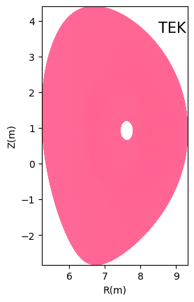
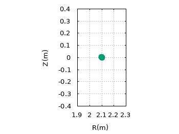
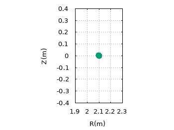

animation of ITG turbulence in a fusion reactor:

(data obtained by gyrokinetic simulations via TEK code)
GTAW (acronym for General Tokamak Alfven Wave) is an ideal MHD eigenvalue code that calculates the frequency and mode structure of Alfven eigenmodes in general tokamak geometry. GTAW reads the standard EFIT G-EQdsk file (g-file) to get the magnetic equilibrium information of an axisymmetric tokamak plasma. Then GTAW uses the equilibrium information to construct a magnetic surface coordinate system. Using the above equilibrium and flux coordinate system, GTAW calculates the MHD continua and try to find global Alfven gap modes. The following documents give the details of the model and numerical methods used in GTAW:
GTAW is a free software, which means that you can redistribute and/or modify it under the terms of the GNU General Public License.
The source code of GTAW can be found here
The development of GTAW code was supported by the National Magnetic Confinement Fusion Science Program of China under Grant No. 2013GB112010.
External Library used in GTAW: Lapack. Refer to the makefile for compiling and running GTAW.
The source code: Tokamak_Guiding_Center_Orbit.tar
Document: Guiding_Center_Motion.pdf
The following are some GIF animations of guiding-center orbit in EAST tokamak, which illustrate the toroidal procession of a trapped fast ion.
 

The source code: pic_1D_src.tar
Relevant document: Notes on particle_simulation.pdf
Fig. Simulation results of landau damping of electron plasma waves agree with the analytical results.